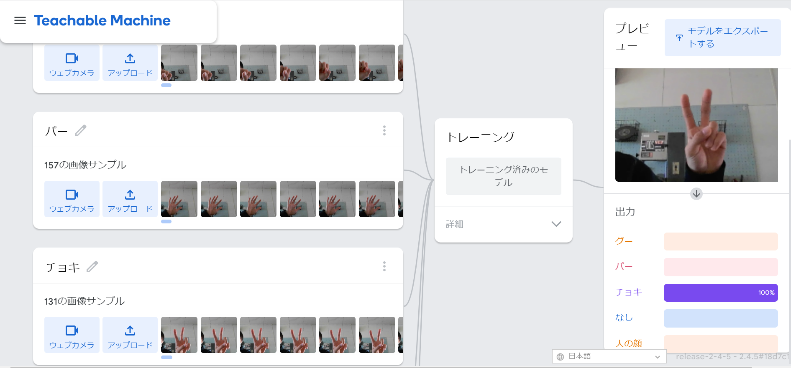

２週目のレポート ： 公大高専１年実習I-1
3B班39番 湯川
第2週目
2-1 １週目のレポートをHTMLで作る
１週目のレポート
1.内容
１週目のレポートを作成した。
2.感想
見やすいと考えた所で改行することを意識した。
2-2 機械学習体験

1.内容
カメラでグー,チョキ,パー,人の顔,何もない,これらの写真をそれぞれ何枚か撮り、
撮った写真をもとにして機械に学習させ、グーなどを出すと瞬時に判別できるプログラムを作成した。
2.感想
2-3 VR（バーチャルリアリティー：Virtual Reality）の体験
1.内容
VRゴーグルを使って実際にVRを体験した。
2.感想
初めての体験で周りが見えないところが怖かったが、楽しめた。